18 MongoDB + Spark实战
1 MongoDB + Spark
什么是 Spark ?
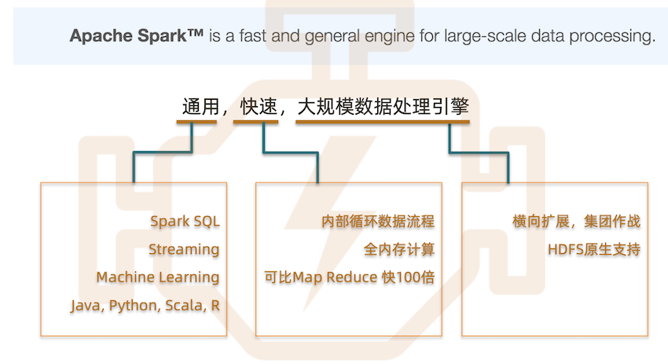
我能用它做什么?
个性化 产品推荐 流处理 商业智能
Spark 生态系统
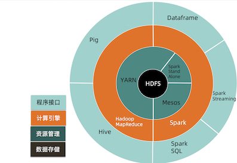
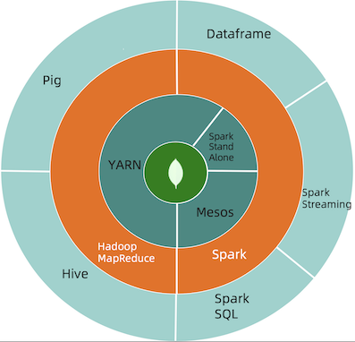
HDFS vs. MongoDB
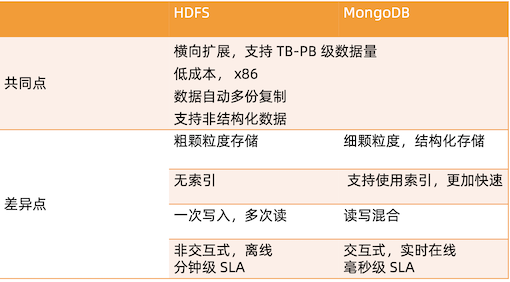
一个日志的例子
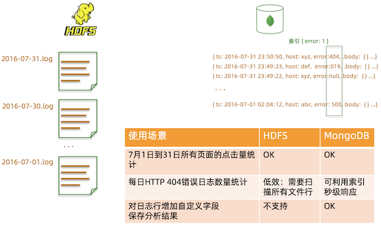
Spark Connector
让 Spark 连接 MongoDB 非常简单，使用 Spark Connector。 开发者:MongoDB 公司
https://github.com/mongodb/mongo-spark
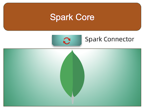
Spark + MongoDB 架构
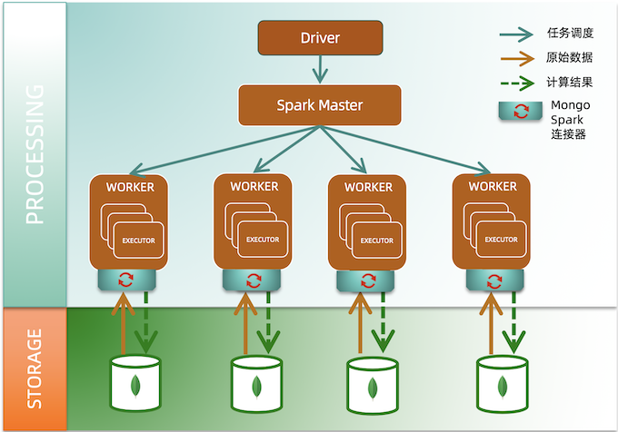
Spark + MongoDB 运价计算及查询案例
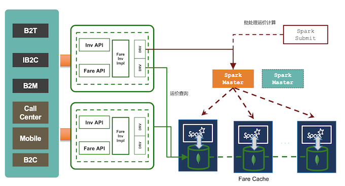
处理能力和响应时间比较
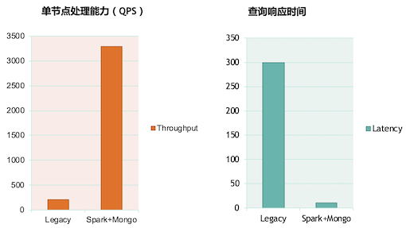
2 MongoDB + Spark 连接实战
场景
假设我们有以下数据:
- name: 用户名;
- address: 住址;
- birthday: 出生日期;
- favouriteColor: 最喜欢的颜色;
我们想按照月份统计每个月出生的人中，喜欢的人数最多的颜色是什么。
选择合适的版本
Spark Connector 要求使用的 MongoDB为2.6 以上。为了在使用过程中不出现兼容性 问题，请按照以下版本对应关系使用(更多详情请参考文档)
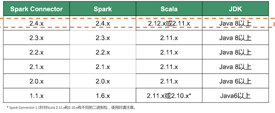
环境配置
- JDK8: https://www.oracle.com/technetwork/java/javase/downloads/jdk8- downloads-2133151.html
- Maven3: http://maven.apache.org/install.html
环境配置
配置文件: /src/main/resources/config.properties
- input: 用于计算的源 MongoDB 集合;
- output: 计算后用于存储输出结果的集合;
编译运行:
mvn install
mvn package
java -jar target/SparkConnectorDemo-1.0-SNAPSHOT-jar-with-dependencies.jar
基本配置
https://github.com/geektime-geekbang/geektime-mongodb-course/tree/master/spark-demo
- https://github.com/geektime-geekbang/geektime-mongodb-course/blob/master/spark-demo/src/main/resources/config.properties
input=mongodb://127.0.0.1/SparkDemo.User
output=mongodb://127.0.0.1/SparkDemo.FavouriteColorStat
- https://github.com/geektime-geekbang/geektime-mongodb-course/blob/master/spark-demo/src/main/java/org/geekbang/time/spark/SparkDemo.java
基本配置
SparkSession spark = SparkSession.builder()
.master("local")
.appName("MongoSparkConnectorIntro")
.config("spark.mongodb.input.uri", "mongodb://127.0.0.1/demo.Person")
.config("spark.mongodb.output.uri", "mongodb://127.0.0.1/demo.Output")
.getOrCreate();
JavaSparkContext jsc = new JavaSparkContext(spark.sparkContext());
- master: 指定 Spark 的 Master 节点地址。没有独立 Spark 集群的时候可以指定为 local(仅用 于测试目的);
spark.mongodb.input.uri: 来源 MongoDB 连接字符串- demo: 来源数据库名;
- Persion: 来源集合名;
spark.mongodb.output.uri: 目标 MongoDB 连接字符串demo: 输出数据库名;Output: 输出集合名;
更多配置选项请参考文档: https://docs.mongodb.com/spark-connector/master/configuration/
ReadConfig 和 WriteConfig
在使用 Spark Connector 的时候，很多 API 中会出现可选的 ReadConfig 和 WriteConfig，它们可以提供读和写方面的定制化修改。例如对于读操作:
- 配置一个不同于
spark.mongodb.input.uri中指定的数据库和集合; - 配置读取操作的
ReadConcern; - 配置读取要使用的
ReadPreference; - 更多选项请参考: ReadConfig;
同理，对于写操作也有一些可定制选项，例如:
- 配置一个不同于 spark.mongodb.output.uri 中指定的数据库和集合;
- 配置写操作的 WriteConcern;
- 批量写时是否保证顺序;
- 更多选项请参考: WriteConfig;
数据加载和输出
List pipeline = Arrays.asList(
addFields(new Field("month", new Document("$month", "$birthday")))
);
JavaMongoRDD<Document> mgoRdd = MongoSpark.load(jsc, rc)
.withPipeline( pipeline );
// 各种Spark运算
MongoSpark.save(rdd, writeConfig);
MongoSpark.load: 从来源 MongoDB 中加载数据;withPipeline: 使用指定的 Aggregation 管道对集合中的数据进行预处理。所有 Aggregation- 运算符都支持;
MongoSpark.save: 将结果集输出到配置的 MongoDB 中;
条件输出
上面讲到的 MongoSpark.save 使用了最简单的方式将结果输出到目标集合中
- 如果 rdd中的
_id在目标集合中存在，则替换那条记录; - 如果 rdd中的
_id在目标集合中不存在，则新增一条记录;
如果想根据其他字段更新数据怎么办?
条件输出
final WriteConfig writeConfig = WriteConfig.create(jsc).withOptions(new HashMap<String, String>());
final ReadConfig readConfig = ReadConfig.create(jsc).withOptions(new HashMap<String, String>());
mgoRdd.foreachPartition(iterator -> {
MongoConnector mc = MongoConnector.create(writeConfig.asJavaOptions());
mc.withCollectionDo(readConfig, Document.class, collection -> {
while(iterator.hasNext()) {
Document doc = iterator.next();
collection.replaceOne(eq(”user_id", ”12345678"), doc);
}
return null;
});
});
- readConfig/writeConfig: 定义一些读写配置，例如 readConcern, writeConcern, 或重定义输入输出集合等;
- foreachPartition: 在各个分区遍历 rdd 中的内容，iterator 中即为每条数据;
- withCollectionDo: 从 Spark Connector 获得 MongoCollection;
Spark Demo 代码
mvn install package
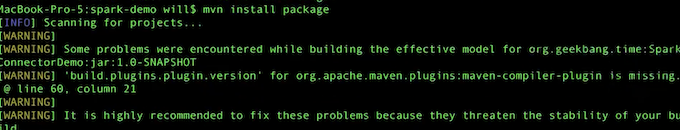
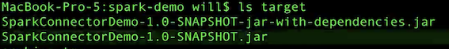
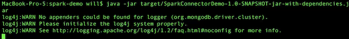
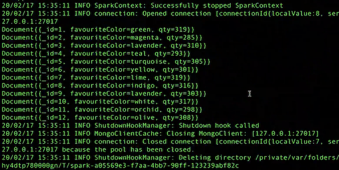
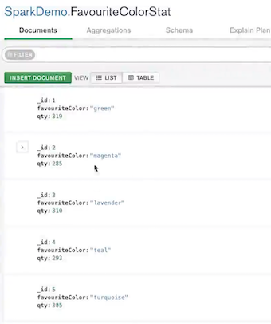
小结
- MongoDB 只是一个存储，Spark 里面的计算操作基本不变，只有数据输入输出要 使用特定 API。
- MongoDB 的优势是可以更加快速，更加大量的为 Spark 提供原始数据。